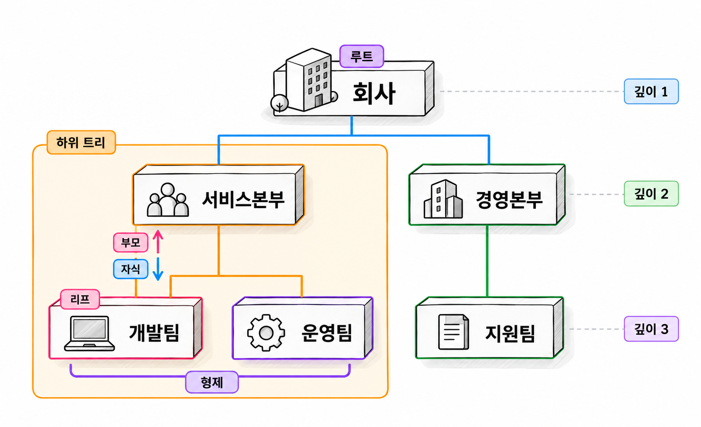

23장. 계층 구조 설계란?
1. 계층의 업무 규칙
1.1 루트·부모·자식·깊이와 형제 순서
계층 구조(hierarchy)는 대상을 상위와 하위 관계로 연결한 구조입니다. 조직도, 상품 분류, 메뉴처럼 같은 종류의 대상이 여러 단계로 이어질 때 사용합니다.
조직도를 예로 들면 회사 아래에 본부가 있고, 본부 아래에 팀이 있습니다. 조직 이름만 저장해서는 어느 팀이 어느 본부에 속하는지 알 수 없습니다. 조직의 속성과 조직 사이의 연결을 함께 관리해야 합니다.
| 용어 | 의미 | 조직도 사례 |
|---|---|---|
| 루트(root) | 계층의 출발점인 최상위 대상 | 회사 |
| 부모(parent) | 바로 위에 연결된 대상 | 개발팀의 상위 조직인 서비스본부 |
| 자식(child) | 바로 아래에 연결된 대상 | 서비스본부 아래의 개발팀 |
| 형제(sibling) | 부모가 같은 대상 | 서비스본부 아래의 개발팀과 운영팀 |
| 리프(leaf) | 자식이 없는 대상 | 하위 조직이 없는 팀 |
| 깊이(depth) | 루트에서 해당 대상까지의 단계 | 회사에서 팀까지 내려온 단계 |
깊이는 기준을 정해서 사용합니다. 루트를 깊이 0으로 세기도 하고 1로 세기도 합니다. 이 장에서는 Oracle의 LEVEL에 맞춰 조회 시작 행을 1로 셉니다.
하위 트리(subtree)는 특정 대상과 그 아래에 연결된 모든 대상을 묶은 범위입니다. 서비스본부의 하위 트리에는 서비스본부와 그 아래의 모든 팀이 포함됩니다. “하위 조직만 조회”라는 요구사항이라면 시작 조직을 포함하는지 따로 확인해야 합니다.

형제 순서는 부모 관계와 별개의 속성입니다. 개발팀과 운영팀이 같은 본부에 속한다는 사실만으로 화면에 표시할 순서가 정해지지는 않습니다. sort_order 같은 속성으로 형제 사이의 순서를 저장합니다.
정렬값이 같을 때의 기준도 필요합니다. 이 장에서는 sort_order가 같으면 조직번호 순으로 표시합니다. 행을 입력한 순서나 기본키 순서가 화면 순서를 자동으로 보장하지는 않습니다.
1.2 트리·다중 부모·순환 관계 구분
트리(tree)는 루트를 제외한 각 대상에 부모가 하나씩 있는 계층입니다. 루트에서 특정 대상까지 내려가는 경로가 하나이며, 연결을 따라가다가 같은 대상으로 돌아오지 않습니다.
루트가 여러 개인 독립된 트리의 모음은 포리스트(forest)라고 합니다. 여러 회사의 조직도를 함께 관리한다면 회사별 루트를 둘 수 있습니다. 전체 데이터에 루트가 반드시 하나여야 하는지는 업무 규칙으로 정합니다.
한 대상에 부모를 여러 개 허용하면 구조가 달라집니다. 상품 분류에서 여러 상위 분류가 같은 하위 분류를 공유할 수도 있습니다. 이런 관계는 대상 테이블의 parent_id 한 컬럼으로 표현할 수 없습니다. 부모와 자식의 연결을 별도 테이블에 저장해야 합니다.
| 구조 | 부모 수 | 같은 대상으로 돌아오는 경로 | 설계상 특징 |
|---|---|---|---|
| 트리 | 루트는 0개, 나머지는 1개 | 없음 | 부모번호 한 컬럼으로 표현 가능 |
| 포리스트 | 루트는 0개, 나머지는 1개 | 없음 | 여러 루트 허용 |
| 다중 부모 계층 | 여러 개 허용 | 없어야 한다는 규칙을 둘 수 있음 | 연결 테이블 필요 |
| 순환을 허용하는 관계 | 업무에 따라 다름 | 있음 | 일반적인 조직 트리와 구분 |
방향이 있고 순환이 없는 그래프를 방향성 비순환 그래프(Directed Acyclic Graph, DAG)라고 합니다. 다중 부모를 허용하더라도 순환을 금지하면 DAG로 관리할 수 있습니다.
순환(cycle)은 연결을 따라가다가 이미 거친 대상으로 돌아오는 상태입니다. 개발팀의 부모가 서비스본부인데, 서비스본부의 부모를 개발팀으로 바꾸면 순환이 생깁니다. 두 행의 부모번호가 모두 실제 조직을 가리키므로 외래키만으로는 막을 수 없습니다.
다중 부모 구조에서는 같은 대상이 여러 경로로 나타날 수 있습니다. 이때 경로별로 보여 줄지, 대상별로 한 번만 보여 줄지 정해야 합니다. 하위 대상의 금액을 집계한다면 같은 금액을 여러 번 더하지 않도록 집계 기준도 확인해야 합니다.
2. 계층 저장 방식 비교
2.1 인접 목록과 자기 참조 외래키
인접 목록(adjacency list)은 각 행에 바로 위 부모의 식별자를 저장하는 방식입니다. 조직 테이블에 조직번호와 부모조직번호를 두는 형태입니다.
| 조직번호 | 조직명 | 부모조직번호 | 형제 순서 |
|---|---|---|---|
| 100 | 회사 | NULL | 1 |
| 200 | 서비스본부 | 100 | 1 |
| 300 | 경영본부 | 100 | 2 |
| 210 | 개발팀 | 200 | 1 |
| 220 | 운영팀 | 200 | 2 |
| 310 | 지원팀 | 300 | 1 |
부모조직번호는 같은 테이블의 조직번호를 참조합니다. 이렇게 같은 테이블 안의 키를 참조하는 외래키를 자기 참조 외래키(self-referencing foreign key)라고 합니다.
예제 23-1 — 조직 계층의 실습 데이터 만들기
파일명: ch23_01_org_setup.sql
CREATE TABLE ch23_org (
org_id NUMBER(10)
CONSTRAINT pk_ch23_org PRIMARY KEY,
org_name VARCHAR2(100 CHAR)
CONSTRAINT nn_ch23_org_name NOT NULL,
parent_org_id NUMBER(10),
sort_order NUMBER(5)
DEFAULT 1
CONSTRAINT nn_ch23_org_sort NOT NULL,
CONSTRAINT fk_ch23_org_parent
FOREIGN KEY (parent_org_id)
REFERENCES ch23_org (org_id),
CONSTRAINT ck_ch23_org_self
CHECK (parent_org_id <> org_id),
CONSTRAINT ck_ch23_org_sort
CHECK (sort_order >= 1)
);
CREATE INDEX ix_ch23_org_parent
ON ch23_org (parent_org_id, sort_order, org_id);
INSERT INTO ch23_org VALUES (100, '회사', NULL, 1);
INSERT INTO ch23_org VALUES (200, '서비스본부', 100, 1);
INSERT INTO ch23_org VALUES (300, '경영본부', 100, 2);
INSERT INTO ch23_org VALUES (210, '개발팀', 200, 1);
INSERT INTO ch23_org VALUES (220, '운영팀', 200, 2);
INSERT INTO ch23_org VALUES (310, '지원팀', 300, 1);
COMMIT;
SELECT org_id, org_name, parent_org_id, sort_order
FROM ch23_org
ORDER BY org_id;실행 결과
ORG_ID ORG_NAME PARENT_ORG_ID SORT_ORDER
100 회사 NULL 1
200 서비스본부 100 1
210 개발팀 200 1
220 운영팀 200 2
300 경영본부 100 2
310 지원팀 300 1결과의 NULL은 부모조직번호가 비어 있음을 나타냅니다. SQL Developer에서는 빈칸으로 표시될 수도 있습니다.
외래키는 존재하지 않는 부모를 지정하는 일을 막습니다. CHECK 제약조건은 자신을 직접 부모로 지정하는 일을 막습니다. 부모조직번호가 NULL인 루트는 허용합니다. 두 조직 이상을 거치는 순환은 별도로 검사해야 합니다.
부모를 찾는 조회는 기본키를 사용할 수 있습니다. 자식을 찾는 조회에는 부모조직번호가 선두인 인덱스를 고려합니다. 실제 인덱스 사용 여부와 정렬 비용은 실행 계획으로 확인합니다.
인접 목록에서는 조직을 이동할 때 해당 조직의 부모번호를 바꿉니다. 자식들은 기존 부모 관계를 유지하므로 함께 이동합니다. 다만 새 부모가 이동 대상 자신의 하위에 있는지 먼저 검사해야 합니다.
2.2 경로 열거 방식
경로 열거(materialized path)는 루트부터 해당 대상까지의 경로를 각 행에 저장하는 방식입니다. 개발팀의 경로를 /100/200/210/처럼 저장할 수 있습니다.
| 조직번호 | 조직명 | 저장 경로 |
|---|---|---|
| 100 | 회사 | /100/ |
| 200 | 서비스본부 | /100/200/ |
| 210 | 개발팀 | /100/200/210/ |
| 220 | 운영팀 | /100/200/220/ |
| 300 | 경영본부 | /100/300/ |
| 310 | 지원팀 | /100/300/310/ |
서비스본부의 하위 트리는 /100/200/으로 시작하는 경로를 찾으면 됩니다. 구분자를 두면 조직번호 200과 2000을 구별할 수 있습니다.
경로에는 이름보다 식별자를 사용하는 편이 좋습니다. 조직 이름이 바뀌어도 모든 하위 경로를 수정할 필요가 줄어듭니다. 식별자에 구분자를 허용한다면 구분자를 어떻게 저장하고 해석할지도 정해야 합니다.
경로를 저장하는 컬럼을 org_path라고 할 때 하위 트리 조건은 다음과 같습니다.
코드 조각
WHERE org_path LIKE '/100/200/%'접두 검색에 인덱스를 활용할 가능성은 있지만, 경로 길이와 데이터 분포에 따라 비용이 달라집니다. 경로 문자열의 정렬 순서가 형제의 업무상 표시 순서와 같다고 가정해서도 안 됩니다.
조직을 이동할 때는 인접 목록보다 더 많은 행을 바꿔야 합니다. 서비스본부를 다른 조직 아래로 옮기면 서비스본부와 모든 하위 조직의 경로를 바꿔야 합니다. 모든 경로가 함께 바뀌도록 한 트랜잭션으로 관리해야 합니다.
부모번호와 경로를 함께 저장한다면 두 값이 같은 구조를 나타내야 합니다. 부모번호를 원본으로 삼아 경로를 계산해 저장할 수도 있습니다. 이때는 경로의 갱신 책임과 재생성 방법을 정해 둡니다.
2.3 클로저 테이블과 중첩 집합
클로저 테이블(closure table)은 모든 조상과 자손의 연결을 별도 테이블에 저장하는 방식입니다. 바로 위 부모뿐 아니라 여러 단계를 거치는 관계도 저장합니다.
서비스본부와 개발팀의 연결은 거리가 1입니다. 회사와 개발팀의 연결은 거리가 2입니다. 자신과 자신의 연결도 거리 0으로 저장하는 구성이 일반적입니다.
| 조상번호 | 자손번호 | 거리 |
|---|---|---|
| 100 | 100 | 0 |
| 100 | 200 | 1 |
| 100 | 210 | 2 |
| 200 | 200 | 0 |
| 200 | 210 | 1 |
| 210 | 210 | 0 |
표는 전체 연결 중 일부입니다. 트리를 관리한다면 (조상번호, 자손번호)를 기본키로 둘 수 있습니다. 두 번호에는 각각 조직 테이블을 참조하는 외래키를 설정할 수 있습니다. 하위 조회에는 조상번호가 선두인 키를, 상위 조회에는 자손번호가 선두인 인덱스를 고려합니다.
하위 트리는 조상번호 하나로 찾습니다. 반대로 특정 조직의 상위 경로는 자손번호로 찾습니다. 조회마다 부모 관계를 반복해서 따라가는 비용을 줄이는 대신, 조직 이동 때 연결 행을 많이 바꿔야 합니다.
이동할 하위 트리 내부의 연결은 유지합니다. 기존 외부 조상과 하위 트리 사이의 연결을 제거합니다. 그런 다음 새 조상들과 하위 트리 사이의 연결을 추가합니다. 깊은 일자형 트리에서는 연결 행 수가 조직 수의 제곱에 비례해 증가할 수 있습니다.
다중 부모 구조에서는 같은 조상과 자손 사이에 경로가 여러 개 생길 수 있습니다. 두 컬럼으로 구성한 기본키와 거리 한 개만으로는 모든 경로를 표현할 수 없습니다. 도달 가능성만 저장할지, 최단 거리나 경로별 정보를 저장할지 먼저 결정해야 합니다.
중첩 집합(nested set)은 트리를 순회하면서 각 대상에 왼쪽 경계값과 오른쪽 경계값을 부여하는 방식입니다. 조상의 경계 안에 모든 자손의 경계가 들어갑니다.
| 조직명 | 왼쪽 경계값 | 오른쪽 경계값 |
|---|---|---|
| 회사 | 1 | 12 |
| 서비스본부 | 2 | 7 |
| 개발팀 | 3 | 4 |
| 운영팀 | 5 | 6 |
| 경영본부 | 8 | 11 |
| 지원팀 | 9 | 10 |
서비스본부의 하위 조직은 왼쪽 경계값이 2보다 크고 오른쪽 경계값이 7보다 작은 행입니다. 자신까지 포함하려면 경계값이 같은 행도 포함합니다.
하위 범위를 비교하기는 편하지만, 조직을 추가하거나 옮기면 많은 행의 경계값을 조정할 수 있습니다. 경계값에 여유를 두는 변형도 있지만, 여유 공간을 소진하면 재배치가 필요합니다.
| 저장 방식 | 조회 특성 | 조직 이동 시 변경 | 주로 고려할 상황 |
|---|---|---|---|
| 인접 목록 | 계층 탐색으로 상하위 조회 | 이동 대상의 부모번호 변경 | 변경이 잦은 일반적인 조직 구조 |
| 경로 열거 | 경로 접두값으로 하위 조회 | 하위 트리의 경로 변경 | 경로 조회가 많고 이동이 적은 구조 |
| 클로저 테이블 | 조상·자손 연결을 직접 조회 | 외부 조상과의 연결 변경 | 상하위 전체 조회가 빈번한 구조 |
| 중첩 집합 | 경계값으로 하위 범위 조회 | 다수 행의 경계값 조정 가능 | 변경이 드문 트리의 하위 범위 조회 |
조회 한 번의 편의성만으로 선택하지 않습니다. 조직 수, 최대 깊이, 이동 빈도와 동시 변경량을 함께 비교합니다. 이 장의 Oracle 조회 실습은 예제 23-1의 인접 목록을 사용합니다.
3. Oracle의 계층 조회
3.1 CONNECT BY·START WITH와 순환 감지
START WITH는 조회를 시작할 행을 정합니다. CONNECT BY는 현재 행에서 다음 행으로 이어지는 조건을 정합니다. PRIOR를 붙인 식은 탐색 중인 부모 행의 값을 뜻합니다.
아래 방향으로 탐색할 때는 부모 행의 조직번호와 다음 행의 부모조직번호를 연결합니다.
기본 문법
SELECT 컬럼목록, LEVEL
FROM 테이블명
START WITH 시작조건
CONNECT BY NOCYCLE PRIOR 식별자컬럼 = 부모식별자컬럼
ORDER SIBLINGS BY 형제순서컬럼, 식별자컬럼;LEVEL은 시작 행에서 1이며 한 단계 내려갈 때마다 증가합니다. NOCYCLE은 순환을 만난 경로에서 탐색을 멈추도록 합니다. 순환 데이터가 정상이라는 뜻은 아닙니다.
CONNECT_BY_ISCYCLE은 현재 행의 자식 후보 중 조상에 해당하는 행이 있으면 1을 반환합니다. 이 의사 컬럼을 사용하려면 NOCYCLE이 필요합니다.
예제 23-2 — 회사에서 하위 조직으로 내려가기
이어서: 예제 23-1
파일명: ch23_02_connect_by.sql
SELECT org_id,
org_name,
LEVEL AS depth,
CONNECT_BY_ISCYCLE AS cycle_flag
FROM ch23_org
START WITH org_id = 100
CONNECT BY NOCYCLE PRIOR org_id = parent_org_id
ORDER SIBLINGS BY sort_order, org_id;실행 결과
ORG_ID ORG_NAME DEPTH CYCLE_FLAG
100 회사 1 0
200 서비스본부 2 0
210 개발팀 3 0
220 운영팀 3 0
300 경영본부 2 0
310 지원팀 3 0서비스본부 다음에 그 자식들이 나오고, 그 뒤에 경영본부가 나옵니다. ORDER SIBLINGS BY는 계층을 유지하면서 같은 부모 아래의 행을 정렬합니다.
일반 ORDER BY로 조직 이름을 정렬하면 전체 결과가 이름순으로 바뀝니다. 부모 바로 아래에 자식을 배치하려면 형제 정렬을 사용합니다.
계층 탐색 후 적용되는 WHERE 조건은 조건에 맞지 않는 행을 제거합니다. 그 행의 하위 조직까지 모두 제거하지는 않습니다. 특정 조직 아래로 탐색을 이어 가지 않으려면 CONNECT BY의 연결 조건에서 제한해야 합니다. 또는 탐색 대상 데이터를 먼저 제한해야 합니다.
순환 검사에는 시작점도 중요합니다. 루트에서만 조회하면 루트와 연결되지 않은 순환 집합은 발견하지 못합니다. 전체 무결성을 점검하려면 모든 조직을 검사 시작점으로 삼는 등의 별도 검증이 필요합니다.
3.2 재귀 서브쿼리 팩토링
재귀 서브쿼리 팩토링(recursive subquery factoring)은 WITH 안에서 조회 결과를 다시 참조하여 계층을 탐색하는 방법입니다. 시작 행을 만드는 부분과 다음 단계의 행을 찾는 부분을 UNION ALL로 연결합니다.
Oracle 21c에서는 WITH RECURSIVE가 아니라 WITH를 씁니다. 재귀 조회 이름 뒤에는 반환할 컬럼의 별칭 목록을 적습니다.
예제 23-3 — WITH로 같은 조직 계층 조회하기
이어서: 예제 23-1
파일명: ch23_03_recursive_with.sql
WITH org_tree (
org_id,
org_name,
parent_org_id,
sort_order,
depth
) AS (
SELECT org_id,
org_name,
parent_org_id,
sort_order,
1
FROM ch23_org
WHERE org_id = 100
UNION ALL
SELECT child.org_id,
child.org_name,
child.parent_org_id,
child.sort_order,
parent.depth + 1
FROM ch23_org child
JOIN org_tree parent
ON child.parent_org_id = parent.org_id
)
SEARCH DEPTH FIRST BY sort_order, org_id SET traversal_order
CYCLE org_id SET cycle_flag TO 'Y' DEFAULT 'N'
SELECT org_id, org_name, depth, cycle_flag
FROM org_tree
ORDER BY traversal_order;실행 결과
ORG_ID ORG_NAME DEPTH CYCLE_FLAG
100 회사 1 N
200 서비스본부 2 N
210 개발팀 3 N
220 운영팀 3 N
300 경영본부 2 N
310 지원팀 3 N첫 번째 SELECT가 시작 조직을 반환합니다. 두 번째 SELECT는 앞에서 찾은 조직을 부모로 삼아 자식을 찾습니다. depth도 이전 단계의 값에 1을 더해 직접 계산합니다.
SEARCH DEPTH FIRST는 한 조직의 하위를 먼저 배치하는 정렬용 값을 만듭니다. SEARCH BREADTH FIRST를 사용하면 같은 깊이의 조직을 먼저 배치하는 값을 만듭니다. 최종 출력 순서를 보장하려면 생성된 traversal_order를 ORDER BY에 지정합니다.
CYCLE org_id는 같은 탐색 경로에서 조직번호가 반복되는지 검사합니다. 반복된 행에 Y를 표시하고 해당 경로의 추가 탐색을 멈춥니다. 표시되는 행은 CONNECT_BY_ISCYCLE이 표시하는 행과 다를 수 있습니다. 두 기능이 표시한 행을 같은 의미로 비교해서는 안 됩니다.
다중 부모 구조에서는 다른 경로에서 같은 조직을 다시 방문할 수 있습니다. 조상 경로 안에서 반복된 것이 아니라면 그 사실만으로 순환은 아닙니다.
3.3 하위 트리·상위 경로·형제 순서 조회
하위 조회와 상위 조회의 차이는 연결 방향입니다. 하위 조회는 자신의 조직번호를 자식의 부모조직번호와 연결합니다. 상위 조회는 자신의 부모조직번호를 다음 조직의 조직번호와 연결합니다.
SYS_CONNECT_BY_PATH는 조회 시작 행부터 현재 행까지의 값을 구분자로 연결합니다. 경로 문자열을 테이블에 저장하지 않고도 조회 결과로 만들 수 있습니다.
예제 23-4 — 서비스본부의 하위 트리와 경로 조회하기
이어서: 예제 23-1
파일명: ch23_04_subtree.sql
SELECT org_id,
org_name,
LEVEL AS relative_depth,
SYS_CONNECT_BY_PATH(org_name, '/') AS org_path
FROM ch23_org
START WITH org_id = 200
CONNECT BY NOCYCLE PRIOR org_id = parent_org_id
ORDER SIBLINGS BY sort_order, org_id;실행 결과
ORG_ID ORG_NAME RELATIVE_DEPTH ORG_PATH
200 서비스본부 1 /서비스본부
210 개발팀 2 /서비스본부/개발팀
220 운영팀 2 /서비스본부/운영팀서비스본부에서 조회를 시작했으므로 서비스본부의 깊이가 1입니다. LEVEL은 조회 시작점에 따른 상대적인 깊이입니다. 전체 조직도에 저장된 고정 깊이가 아닙니다. 경로에도 조회 시작점보다 위에 있는 회사는 포함되지 않습니다.
이 예제의 조직명에는 경로 구분자인 /가 없다는 조건을 둡니다. 실제 표시 경로를 만들 때는 이름에 구분자가 들어갈 수 있는지 확인합니다.
시작 조직을 제외한 하위 조직만 필요하면 WHERE LEVEL > 1을 추가할 수 있습니다. 바로 아래 자식만 필요하면 부모조직번호를 일반 조건으로 조회해도 됩니다.
코드 조각
SELECT org_id, org_name
FROM ch23_org
WHERE parent_org_id = 200
ORDER BY sort_order, org_id;상위 경로를 조회할 때는 PRIOR가 붙는 컬럼을 바꿉니다.
예제 23-5 — 개발팀에서 회사까지 거슬러 올라가기
이어서: 예제 23-1
파일명: ch23_05_ancestors.sql
SELECT org_id,
org_name,
LEVEL - 1 AS distance_from_start
FROM ch23_org
START WITH org_id = 210
CONNECT BY NOCYCLE PRIOR parent_org_id = org_id
ORDER BY LEVEL;실행 결과
ORG_ID ORG_NAME DISTANCE_FROM_START
210 개발팀 0
200 서비스본부 1
100 회사 2PRIOR parent_org_id = org_id는 현재 탐색 행의 부모번호와 같은 조직번호를 가진 조직을 찾습니다. 이 예제는 시작 조직에서 상위로 향하는 한 경로이므로 LEVEL 순으로 출력합니다. 회사부터 개발팀까지 보이려면 ORDER BY LEVEL DESC로 바꿉니다.
조직 이동 전 검사에도 하위 조회를 사용할 수 있습니다. 새 부모가 이동 대상의 하위 트리에 포함되어 있으면 이동을 거부합니다. 이동 대상 자신도 검사 범위에 포함해야 합니다.
하지만 검사와 변경 사이에 다른 세션이 조직을 옮길 수 있습니다. 각 세션의 검사 결과가 정상이더라도 두 변경을 합치면 순환이 생길 수 있습니다. 조직 변경을 담당하는 공통 절차에서 검사와 변경을 한 트랜잭션으로 묶어야 합니다. 같은 조직도의 구조 변경을 직렬화하는 잠금 정책 등도 적용해야 합니다.
4. 연습문제 — 조직 이동과 하위 조직 조회 설계
예제 23-1의 조직 데이터를 사용합니다. 운영팀을 서비스본부에서 경영본부로 옮기는 기능을 설계합니다. 인접 목록을 기본 저장 방식으로 사용합니다.
요구사항
- 루트는 회사 조직 한 개로 유지합니다. 루트 조직의 이동은 허용하지 않습니다.
- 조직을 자기 자신이나 자신의 하위 조직 아래로 이동할 수 없습니다.
- 운영팀을 경영본부 아래로 옮깁니다. 지원팀 다음에 표시되도록 형제 순서를 지정합니다.
- 특정 조직과 모든 하위 조직을 조회하는 SQL을 작성합니다.
- 특정 조직에서 회사까지 올라가는 SQL을 작성합니다.
- 구조 변경 요청 두 건이 동시에 실행될 때 순환을 막을 방법을 설명합니다.
작성할 내용
- draw.io로 작성한 이동 전후의 논리 ERD와 조직도
- 부모번호·형제 순서·루트에 관한 업무 규칙
- 이동 전 순환 검사 SQL과 조직 이동 SQL
- 이동 후 하위 트리와 상위 경로를 확인하는 SQL
- 경로 열거 또는 클로저 테이블을 사용했을 때 추가로 바꿔야 할 데이터에 대한 설명
ERD에는 자기 참조 관계와 부모의 선택 참여를 표시합니다. 부모가 없는 행을 허용하는 컬럼 구조와 루트를 한 개만 허용하는 업무 규칙은 구분해서 적습니다.
완료 조건
- 이동 후 서비스본부의 하위 트리에는 서비스본부와 개발팀이 표시됩니다.
- 경영본부의 하위 트리에는 경영본부, 지원팀, 운영팀 순으로 표시됩니다.
- 운영팀의 상위 경로는 운영팀, 경영본부, 회사 순입니다.
- 경영본부를 그 아래의 지원팀으로 이동하려는 요청은 거부됩니다.
- 존재하지 않는 부모번호와 자기 자신을 부모로 지정하는 입력은 거부됩니다.
- 검증 중 실패하면 부모번호와 형제 순서 변경이 함께 취소됩니다.
- 모든 구조 변경이 같은 동시성 제어 규칙을 따르도록 설계되어 있습니다.